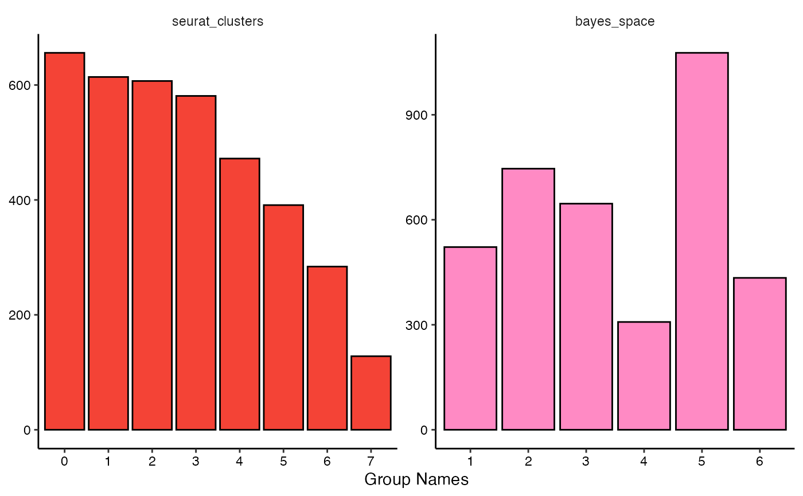

plotBarchart.RdVisualizes the count or the proportion of barcode spots falling
into certain groups via barcharts. It does so either for the whole sample or
in a comparing manner if across is specified.
plotBarchart(
object,
grouping_variables,
across = NULL,
across_subset = NULL,
relevel = NULL,
clrp = NULL,
clrp_adjust = NULL,
position = "stack",
display_facets = NULL,
ncol = NULL,
nrow = NULL,
...
)An object of class SPATA2 or, in case of S4 generics,
objects of classes for which a method has been defined.
Character value or NULL. Specifies the grouping variable of interest.
Use getGroupingOptions() to obtain all variable names that group the
barcode spots of your object in a certain manner.
Character vector or NULL. Specifies the particular groups
of interest the grouping variable specified in argument across contains.
If set to NULL all of them are chosen. You can prefix groups you are NOT interested in with a '-'. (Saves writing if there are more groups you are interested in than groups you are not interested in.)
Use getGroupNames() to obtain all valid input options.
Logical value. If set to TRUE the input order of across_subset
determines the order in which the groups of interest are displayed. Groups that
are not included are dropped which affects the colors with which they are displayed.
Character value. Specifies the color palette to be used to represent
groups of discrete variables. Run validColorPalettes() to obtain valid
input options.
Named character vector or NULL. If character, it adjusts the color palette that is used to represent the groups. Names of the input vector must refer to the group and the respective named element denotes the color with which to represent the group.
Logical value. If set to TRUE the plot is split via
ggplot2::facet_wrap() such that each variable gets it's own subplot.
Numeric values or NULL. Used to arrange multiple plots.
Additional arguments given to the respective ggplot2::geom_<plot_type>()
function. E.g. plotViolinplot() relies on ggplot2::geom_violin().
Character vector. The discrete features whose group count or
proportion you want to display. Must not contain the feature specified in
across - if across is not set to NULL.
Returns a ggplot that can be additionally customized according to the rules of the ggplot2 framework.
library(SPATA2)
library(tidyverse)
data("example_data")
object <- example_data$object_UKF275T_diet
plotBarchart(object, grouping_variables = c("seurat_clusters", "bayes_space"))
#> Warning: `invoke()` is deprecated as of rlang 0.4.0.
#> Please use `exec()` or `inject()` instead.
#> This warning is displayed once every 8 hours.
